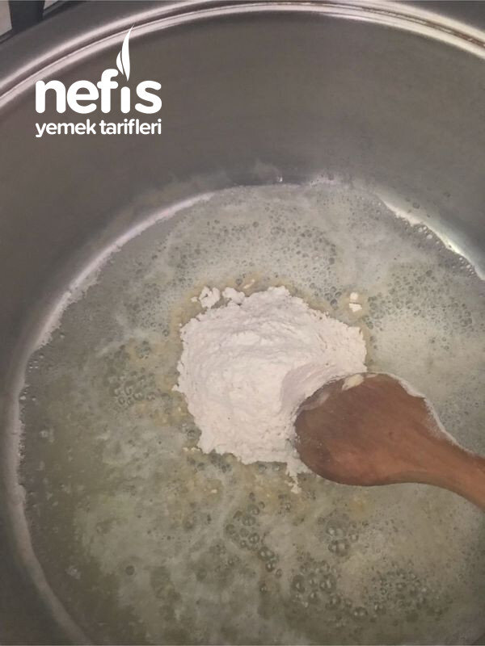

🍽️ 6-8 kişilik⏱️ Hazırlık: 20 dk🔥 Pişirme: 30 dk🏷️ Çorba Tarifleri
Malzemeler
- 4-5 közlenmiş patlıcan
- 2-3 kaşık tereyağı
- 2-3 kaşık zeytinyağı
- 2 kaşık un
- 2 bardak etsuyu
- 1, 5. -2 bardak süt
- Su
- Tuz, karabiber
- Üzeri için istenirse krema
Hazırlanışı
- Unu tereyağında kavuruyoruz.
- Közlenmiş doğranmış patlıcanları ilave ediyoruz( dondurucuda önceden közlediğim patlıcanları kullandım).
- Biraz soteleyince etsuyu ve sıcak su ilave ediyoruz karıştırıyoruz.
- 5-7 dakika sonra süt ilave ediyoruz.
- 1 çay kaşığı kadar karabiber ekliyoruz.
- Blenderden geçirip tuzunu ve kıvamını ayarlıyoruz.
- Kıvamı koyu olmuşsa süt veya su ilave ediyoruz.